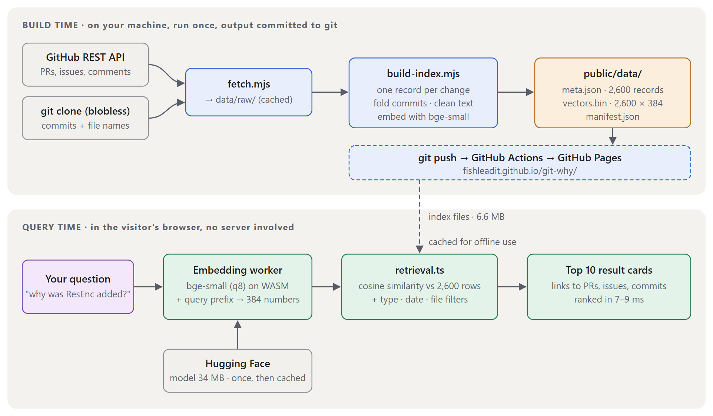
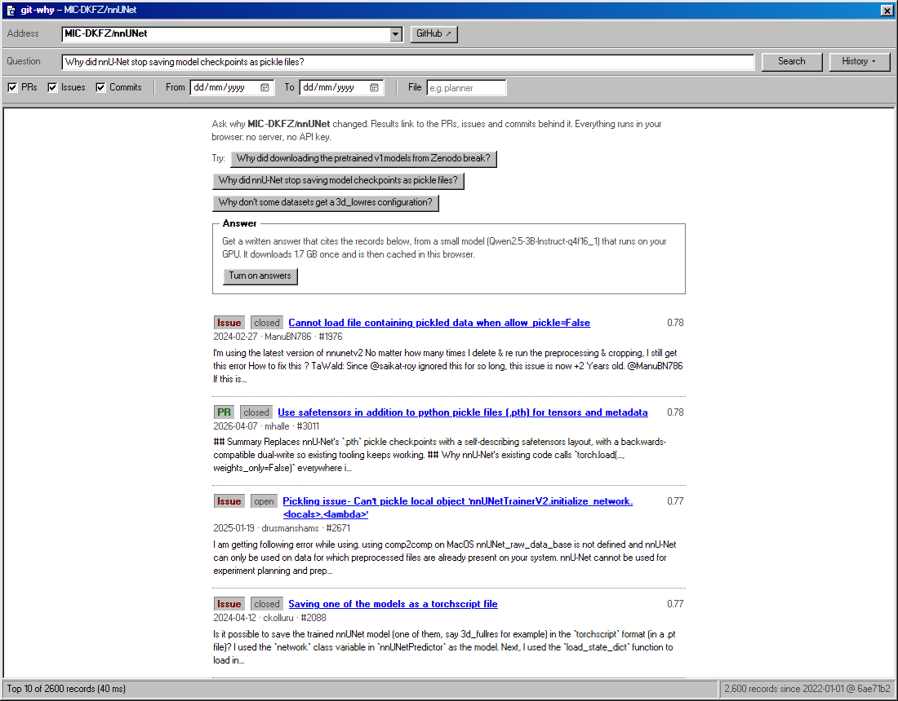
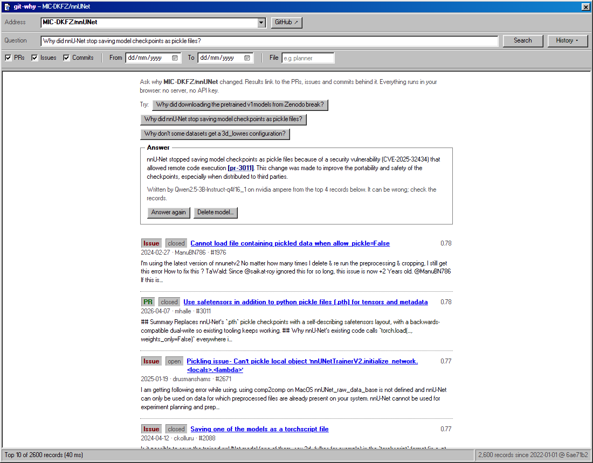
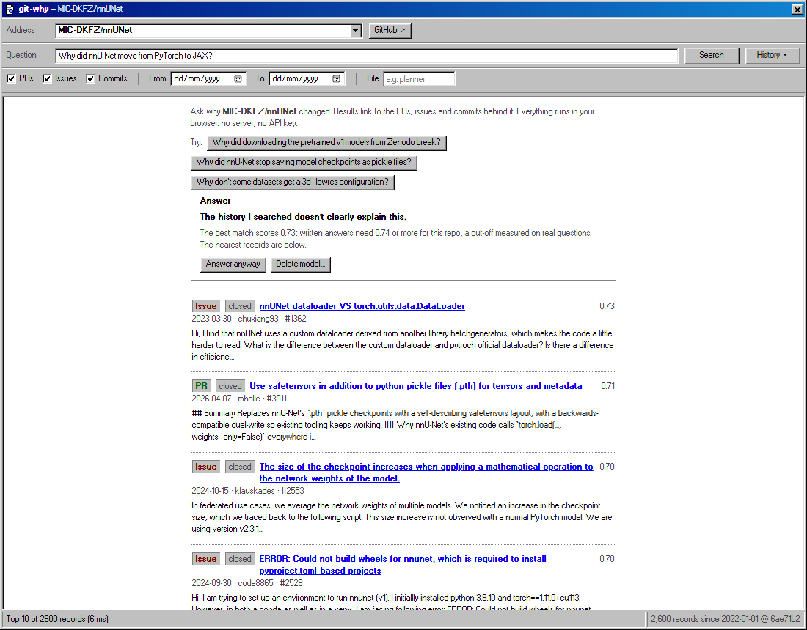
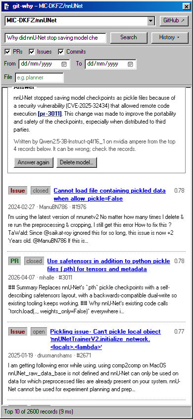

Type a question like "Why did nnU-Net stop saving checkpoints as pickle files?" and git-why finds the pull requests, issues and commits that explain it, then (if you turn it on) writes a short answer that cites them. Every step runs in your browser: there is no server and no API key, and after the first visit it even works offline.
Try it: fishleadit.github.io/git-why · Source: github.com/FishLeAdit/git-why
It currently knows the history since 2022 of two open-source projects: nnU-Net (medical image segmentation; 2,600 records) and transformers.js (machine learning in JavaScript; 2,092 records).
"Why is it like this?"
The reasons behind a change rarely live in the code. They live in pull request descriptions, issue threads and review comments. git log and git blame tell you what changed and who did it; GitHub's search finds the words you type, not what you mean. Ask it "why did downloading the pretrained models break?" and you have to already know the words "HTTP/1.0" and "Zenodo".
Build once, search in the browser

Build time
A script reads the project's history: pull requests, issues and comments through the GitHub API, and commits from a local git clone (so they cost no API requests). It turns each change into one record: one per pull request, one per issue, and one per commit that belongs to neither. Commits are folded into the pull request or issue they belong to, using five rules, because nnU-Net's maintainers mostly merge locally and rarely write "#123" in commit messages. Noise such as "wip" commits and AI-bot replies is dropped.
Each record is turned into 384 numbers that describe its meaning (an embedding, from the small bge-small-en-v1.5 model), and the result is committed as about 6 MB of static files per repository.
In the browser
Your question gets the same kind of embedding, from the same model running in a background thread, and is compared with every record. That is about a million multiplications and takes under 10 ms. The build and the browser share one embedding module, and I checked that they really agree: the same text gets near-identical vectors on both sides (cosine similarity 0.9976 or higher).

A small model on your own GPU
With one click, git-why downloads a 3-billion-parameter language model (Qwen2.5-3B, 1.7 GB, once) and runs it on your graphics card through WebGPU. It is given the four best records and told to answer only from them, citing each claim like [pr-3011]. Citations become links that jump to the record.

Keeping it honest
- A gate. If even the best record is not similar enough, the model is not asked at all; the page says the history doesn't clearly explain this. The cut-off was measured on real questions, not guessed.
- A refusal rule. If the records only mention the topic but never say why, the model must reply with one exact sentence: "The history I searched doesn't explain this."
- A citation check. Any id the model cites that it was not given is struck through and flagged as made up; answers with no citations get a warning.

Measured, not eyeballed
I wrote 31 test questions about nnU-Net from records that actually state a reason (23 the history answers, 8 it does not), and reviewed every question and its correct record by hand. npm run eval reproduces these numbers exactly.
Does the right record come up?
| Search method | Right record 1st | In top 5 | In top 10 |
|---|---|---|---|
| Meaning (embeddings) (used by the site) | 52% | 78% | 78% |
| Keywords (BM25) | 48% | 74% | 83% |
| Both combined (rank fusion) | 57% | 74% | 74% |
With 23 questions, one question is worth four points, so no method clearly wins. The interesting part is that they fail on different questions: keywords find records with distinctive words like "Dice", while embeddings find paraphrases ("smaller files" matching a pull request about "compression").
Does it know when to say "I don't know"?
The gate's cut-off, chosen on half the questions and tested on the other half, refused 3 of 4 unanswerable questions but also wrongly refused 3 of 11 answerable ones: the two groups' scores overlap, which is why the model's own refusal is the second line of defence.
For the written answers I compared two model sizes and several prompts on the same questions, running on my laptop's RTX 3050 (measured with a local test harness that is not yet part of the repository). The 1.5-billion-parameter model mostly refused or answered without citations, and invented reasons for questions the history doesn't cover. The 3-billion one, with the final prompt, gave a correctly cited answer for 11 of the 18 answerable questions whose source was among its four records, and, together with the gate, declined 7 of the 8 unanswerable ones without inventing a reason for any of them. A different prompt answered 14 of 18, but slipped one invented reason through; I chose honesty.
What it doesn't fix
- Some reasons were never written on GitHub. Why nnU-Net added its residual-encoder (ResEnc) presets is explained in a paper, not in any pull request or issue, so git-why rightly can't answer it, but on-topic support threads still look like answers to the search.
- Wording mismatches. Asking about the "gradient scaler" misses the pull request that only says "GradScaler", for both search methods.
- Busy topics drown quiet records. Dozens of user threads about running out of GPU memory crowd out the one pull request that explains a misleading "Not enough VRAM" message.
- It's still a small model. It sometimes refuses questions it could answer, or pastes record text instead of explaining. The page flags pasted text and suspicious citations, but you should still read the records.
- Hardware. Answers need WebGPU (desktop Chrome or Edge) and a GPU with a few GB of memory. On laptops with two GPUs, Windows hands the browser the slower one unless you change a setting; the page detects this and says so. Search works everywhere.
- A snapshot. The index knows the history up to the day it was built.

Built with
TypeScript and Vite, no UI framework. transformers.js runs the bge-small-en-v1.5 embedding model; WebLLM runs Qwen2.5-3B-Instruct on WebGPU; MiniSearch provides the keyword search. Hosted on GitHub Pages, deployed by GitHub Actions; a service worker makes it work offline.
The Windows 98 look is hand-written CSS. The font is a pixel recreation of MS Sans Serif by "lou" (FontStruct, CC BY-SA 3.0, via 98.css); the cursors come from this desktop, which is based on 98.portfolio by Alexandre Dresch.